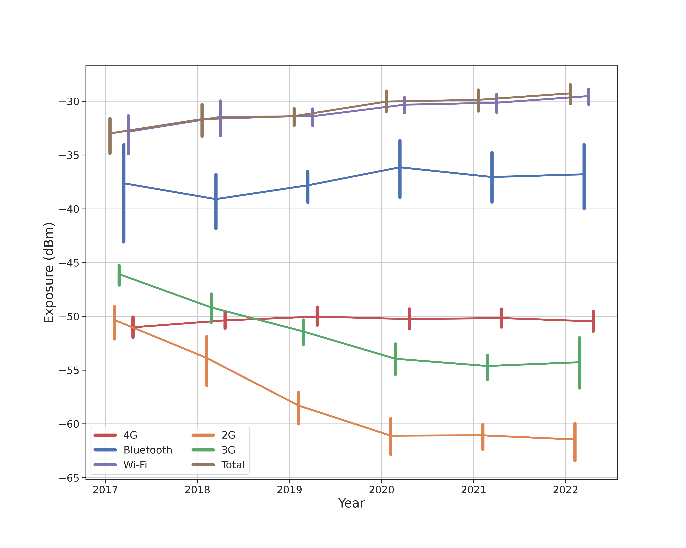
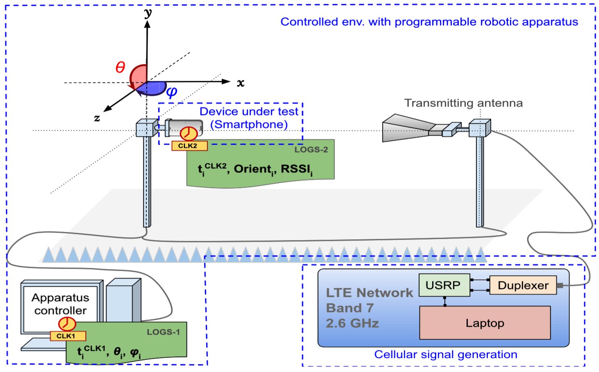

Overview
The impact of radio frequencies on population health has been a subject of concern for the past 40 years. In 2011, the WHO classified radio frequencies as possibly carcinogenic (2B) [Lancet]. However, the lack of robust data on population exposure weaken epidemiological studies, so that a scientific consensus is not reached yet. For this reason, the council of Europe recommends to apply the ALARA (As Low As Reasonably Achievable) principle.
The goal of this research project is to develop the methods and tools to build a large scale worldwide robust data set of population exposure, and to perform sound statistical analysis on the root causes and evolution of this exposure.
Contributions
Longitudinal study of exposure to radio frequencies at population scale
Evaluating exposure to radio frequencies (RF) at population-scale is important for conducting sound epidemiological studies about possible health impact of RF radiations. Numerous studies reported population exposure to RF radiations used in wireless telecommunication technologies, but used very small population samples. In this context, the real exposure of the population at scale remains poorly understood. Here, to the best of our knowledge, we report the largest crowd-based measurement of population exposure to RF produced by cellular antennas, Wi-Fi access points, and Bluetooth devices for 254,410 unique users in 13 countries from January 2017 to December 2020. First, we present methods to assess the population exposure to RF radiations using smartphone measurements obtained using the ElectroSmart Android app. Then, we use these methods to evaluate and characterize the evolution of RF exposure. We show that total exposure has been multiplied by 2.3 in the four-year period considered, with Wi-Fi as the largest contributor. The cellular exposure levels are orders of magnitude lower than regulation limits and are not correlated to national regulation policies. The population tends to be more exposed at home; for half of the study subjects, personal Wi-Fi routers and Bluetooth devices contributed to more than 50% of their total exposure. In this work, we showcase how crowdsource-based data allow large-scale and long-term assessment of population exposure to RF radiations.

| Country | 2017 | 2018 | 2019 | 2020 | 2021 | 2022 | |||||||||||
|---|---|---|---|---|---|---|---|---|---|---|---|---|---|---|---|---|---|
| mean | 95% CI | mean | 95% CI | change | mean | 95% CI | change | mean | 95% CI | change | mean | 95% CI | change | mean | 95% CI | change | |
| BR | -37.1 | [-38.7, -35.8] | -33.9 | [-36.0, -32.4] | +107.9 | -32.8 | [-35.1, -31.1] | +27.2 | -30.5 | [-31.4, -29.7] | +70.4 | -29.7 | [-30.4, -29.0] | +21.9 | -28.2 | [-29.9, -26.4] | +40.6 |
| AU | -32.2 | [-34.3, -30.3] | -31.9 | [-34.2, -29.8] | +6.9 | -29.9 | [-31.9, -27.8] | +58.9 | -30.1 | [-30.8, -29.5] | -5.9 | -29.5 | [-30.6, -28.4] | +16.5 | -28.4 | [-30.6, -26.4] | +26.4 |
| NL | -37.4 | [-40.8, -35.4] | -36.2 | [-38.1, -34.5] | +31.2 | -35.1 | [-37.1, -33.2] | +29.8 | -32.5 | [-33.9, -31.4] | +81.1 | -33.1 | [-33.7, -32.5] | -12.1 | -32.9 | [-34.8, -31.9] | +4.8 |
| IN | -29.1 | [-33.8, -25.9] | -27.3 | [-34.8, -23.4] | +51.0 | -30.8 | [-31.8, -29.9] | -54.7 | -29.9 | [-31.3, -28.7] | +21.7 | -28.8 | [-29.9, -27.9] | +28.1 | -28.4 | [-30.1, -27.3] | +11.6 |
| ES | -36.3 | [-38.3, -34.5] | -34.4 | [-36.4, -32.6] | +56.3 | -31.8 | [-33.3, -30.5] | +80.9 | -30.7 | [-31.9, -29.8] | +27.3 | -29.8 | [-30.8, -28.9] | +24.0 | -29.8 | [-32.0, -29.0] | +0.1 |
| BE | -38.8 | [-39.9, -37.9] | -34.5 | [-35.9, -33.3] | +167.1 | -34.0 | [-35.4, -32.7] | +13.3 | -31.4 | [-32.6, -30.3] | +83.6 | -32.0 | [-33.9, -30.5] | -13.3 | -29.4 | [-31.0, -28.3] | +79.2 |
| CH | -29.5 | [-32.0, -27.5] | -31.5 | [-32.8, -30.3] | -36.7 | -32.0 | [-33.2, -31.1] | -12.4 | -31.5 | [-32.6, -30.3] | +13.5 | -31.2 | [-32.1, -30.4] | +7.3 | -29.9 | [-31.6, -27.9] | +34.7 |
| GB | -37.9 | [-39.6, -36.4] | -32.8 | [-34.1, -31.6] | +224.1 | -31.0 | [-32.8, -29.5] | +50.0 | -30.4 | [-31.6, -29.5] | +14.4 | -31.8 | [-32.6, -31.1] | -26.3 | -30.7 | [-32.0, -29.5] | +28.7 |
| CA | -33.0 | [-34.7, -31.6] | -30.7 | [-31.6, -29.7] | +70.7 | -30.4 | [-31.6, -29.4] | +7.4 | -28.1 | [-28.9, -27.4] | +70.2 | -27.7 | [-28.0, -27.3] | +10.0 | -27.7 | [-28.4, -27.3] | -0.5 |
| DE | -34.4 | [-35.2, -33.8] | -35.2 | [-36.2, -34.3] | -15.9 | -31.6 | [-33.0, -30.4] | +126.7 | -31.1 | [-32.0, -30.2] | +11.9 | -31.8 | [-32.8, -31.0] | -14.7 | -30.9 | [-31.9, -30.1] | +22.8 |
| IT | -33.4 | [-37.4, -30.6] | -32.6 | [-33.8, -31.4] | +20.7 | -31.8 | [-32.4, -31.3] | +18.6 | -30.9 | [-31.5, -30.4] | +22.7 | -30.9 | [-31.3, -30.6] | +0.0 | -30.4 | [-30.8, -30.1] | +12.0 |
| US | -32.3 | [-33.5, -31.1] | -28.9 | [-29.5, -28.4] | +118.2 | -28.8 | [-29.6, -27.8] | +2.8 | -26.6 | [-27.4, -26.0] | +62.3 | -26.8 | [-27.6, -26.2] | -4.5 | -26.2 | [-26.5, -26.0] | +15.5 |
| FR | -31.2 | [-31.5, -31.0] | -31.1 | [-31.6, -30.6] | +3.3 | -31.6 | [-32.1, -31.1] | -11.4 | -30.3 | [-30.6, -29.9] | +35.5 | -29.8 | [-30.4, -29.2] | +10.9 | -29.4 | [-30.4, -28.6] | +9.4 |
Evaluating Smartphone Accuracy for RSSI Measurements
Smartphones are affordable devices nowadays, capable of embedding a large variety of sensors such as magnetometers or orientation sensors, but also the hardware needed to connect them to most wireless communication technologies such as Wi-Fi, Bluetooth, or cellular networks. Therefore, they are handy devices able to perform received signal strength indicator (RSSI) measurements for a wide variety of applications such as cellular coverage maps, indoor localization, or proximity tracking. However, to the best of our knowledge, the accuracy of such measurements has never been rigorously assessed. The goals of this article are to assess the accuracy of the RSSI measurements made with a commercial off-the-shelf (COTS) smartphone in a variety of conditions and how possible inaccuracies can be corrected. We primarily focus on the long-term evolution (LTE) RSSI, but we also extend our results to the Bluetooth RSSI. In this work, we build a controlled experimental setup based on commodity hardware and on open-source software. We evaluate the granularity and limitations of the Android application programming interface (API) that returns the RSSI. We explore how reliable the measurements in a controlled environment with a mono-polarized antenna are. We show that the orientation of the smartphone, the position or orientation of the source, and the transmission power have a significant impact on the accuracy of the measurements. We introduce several correction techniques based on radiation matrix manipulations and on machine learning in order to improve measurement accuracy to less than 5-dBm RMSE, when compared to a professional equipment. We also explore the reliability of measurements made in an outdoor realistic environment. We show that although transmission diversity available in LTE base stations significantly improves the measured RSSI regardless of the smartphone orientation, the Bluetooth RSSI remains largely sensitive to the smartphone orientation.

Software
ElectroSmart is a general audience Android app designed to provide simple and accurate information on exposure to radio frequencies produced by Wi-Fi routers, Bluetooth devices, and cellular antennas. More specifically, it measures the downlink received power in milliWatt (or dBm). This app is performing crowd-sourcing measurements that we exploit in this project to explore population exposure to radio-frequencies at scale.
ElectroSmart has been downloaded more than 1 millions times. It is the most popular and best radio frequency instrument on Google Play. It is ads-free and 100% free to use. More information on the app is available on its dedicated Web site https://electrosmart.app.
ElectroSmart is available on Google Play (archive).
From October 2022, the code of the ElectroSmart Android app is open source under BSD 3-Clause License on GitHub: https://github.com/arnaudlegout/electrosmart/ (discussions).
Papers
- [EI2022]
- Yanis Boussad, Xi (Leslie) Chen, Arnaud Legout, Augustin Chaintreau, Walid Dabbous. Longitudinal study of exposure to radio frequencies at population scale. Environment International, Volume 162, April 2022, 107144, ISSN 0160-4120, doi: 10.1016/j.envint.2022.107144. download
Author version of this paper. - [TIM20]
- Yanis Boussad, M. Naoufal Mahfoudi, Arnaud Legout, Leonardo Lizzi, Fabien Ferrero, Walid Dabbous. Evaluating Smartphone Accuracy for RSSI Measurements. IEEE Transactions on Instrumentation and Measurement, vol. 70, pp. 1-12, 2021, Art no. 5501012, doi: 10.1109/TIM.2020.3048776. download
Author version of this paper. - [APS20]
- Yanis Boussad, Mohamed Naoufal Mahfoudi, Arnaud Legout, Fabien Ferrero, Leonardo Lizzi, Walid Dabbous. Open-Source 4G Experimental Setup. In Proc. of IEEE International Symposium on Antennas and Propagation (AP-S), July 5--10 2020, Montréal, Canada. download
Members
Team
- Yanis Boussad (Research fellow, University of Leeds)
- Arnaud Legout (Research Scientist, Inria, project leader)
- Augustin Chaintreau (Assistant professor, Columbia University)
- Xi (Leslie) Chen (Ph.D. student, Columbia University)
- Walid Dabbous (Research Scientist, Inria)
Former members
- Mondi Ravi (Engineer, Inria)
- David Migliacci (Engineer, Inria)
- Mohamed Naoufal Mahfoudi (Ph.D. student, Inria)
- Leonardo Lizzi (Associate professor, UCA)
- Fabien Ferrero (Professor, UCA)
- Inderjeet Singh(Engineer, Inria)
- Julien Wintz (Engineer, Inria)